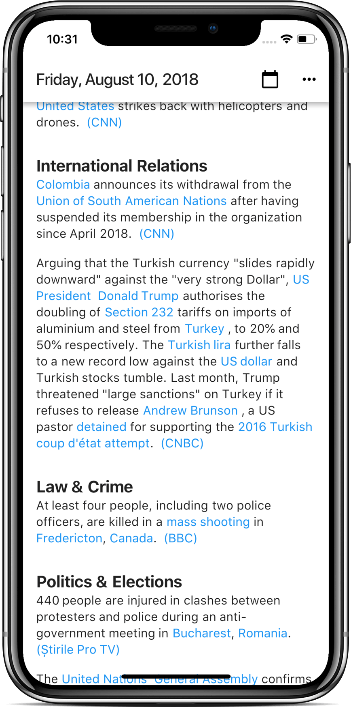

<section class="section">
  <div class="container">
      <div class="columns">
        <div class="column centering-child is-hidden-mobile">
          
        </div>
        <div class="column centering-child">
          <div>
            <div class="head">
                <div class="left">
                  
                </div>
                <div class="right">
                  <div>
                    <h1>Latte</h1>
                    <h2>Daily News Briefing</h2>
                  </div>
                </div>
              </div>
          
            <a href="https://itunes.apple.com/us/app/latte-daily-news-briefing/id1425352535?ls=1&mt=8">
              
            </a>
            <a href="https://play.google.com/store/apps/details?id=com.latte.news&pcampaignid=MKT-Other-global-all-co-prtnr-py-PartBadge-Mar2515-1">
              
            </a>
    
            <p>
              <small><a href="https://github.com/quanglam2807/latte/releases">Release Notes</a> | <a href="mailto:quang.lam2807@gmail.com?subject=[Latte]">Contact</a> | <a href="privacy">Privacy</a> | <a href="https://github.com/quanglam2807/latte">GitHub</a>.</small>
            </p>
    
            <br/>
    
            <div class="content">
              <p>
                Are you tired with news websites: obnoxious ads, "breaking news", auto-play videos, pumping megabytes of crap into your browser, lack of privacy, and lack of citations?
              </p>
    
              <p>Latte gives you access to quality daily news briefing from Wikipedia once per day at 8 PM PST.</p>
    
              <p>It's encrypted. There's no ads. It loads super fast. Your activity isn't logged. It's boring & non-addictive.</p>

              <p><small>Inspired by <a href="http://bradgessler.com/">Brad Gessler</a>'s <a href="https://legiblenews.com">LegibleNews.com</a>. <br/>The icon is modified from <a href="https://thenounproject.com/Mattebrooks/collection/valentine-set/?i=33261">Latte icon by Matt Brooks</a>.</small></p>
            </div>
          </div>
        </div>
        <div class="column is-hidden-tablet">
            
          </div>
      </div>
    </div>      
</section>